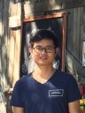

Staff Members

Prof. Jiuyong Li

Prof. Lin Liu

Associate Prof. Jixue Liu

Associate Prof. Thuc Le

Dr. Debo Cheng

Dr. Sha Lu
Ph.D. Students
Mark Carman
Mahdi Shafiei
Wentao Gao
Tuyen Ngoc Vu
Mahdi Shafiei
Wentao Gao
Tuyen Ngoc Vu
Haolin Wang
Xiaojing DU
Xudong Guo
Xiongren Chen
Xiaojing DU
Xudong Guo
Xiongren Chen
Ph.D. Graduates
Bing Liu (2011)
MD Sumon Shahriar (2012)
Kalaivany Natarajan (2012)
Han Jiao (2013)
Muzammil Baig (2013)
Thuc Le (2014)
A.H.M. Sarowar Sattar (2015)
Masud Karim (2016)
Vincent Nofong (2016)
Selasi Kwashie (2016)
MD Sumon Shahriar (2012)
Kalaivany Natarajan (2012)
Han Jiao (2013)
Muzammil Baig (2013)
Thuc Le (2014)
A.H.M. Sarowar Sattar (2015)
Masud Karim (2016)
Vincent Nofong (2016)
Selasi Kwashie (2016)
Saisai Ma (2017)
Abdel-Fatao Hamidu (2017)
Michael Bewong (2018)
Tao Hoang (2018)
Weijia Zhang (2018)
Sumyea Helal (2019)
Michael Bewong (CSU, 2018)
Jeff Ansah (BHP, 2019)
Chen Zhan (2019)
MD Zahidul Islam(2020)
Abdel-Fatao Hamidu (2017)
Michael Bewong (2018)
Tao Hoang (2018)
Weijia Zhang (2018)
Sumyea Helal (2019)
Michael Bewong (CSU, 2018)
Jeff Ansah (BHP, 2019)
Chen Zhan (2019)
MD Zahidul Islam(2020)
Hoang Pham(2021)
Sha Lu(2021)
Debo Cheng(2021)
Xiaomei Li(2022)
Ha Xuan Tran(2023)
Oscar Blessed Deho(2023)
Andres Mauricio Cifuentes Bernal(2023)
Ji-Young Park(2024)
Ziqi Xu(2024)
Liang Zhao(2024)
Sha Lu(2021)
Debo Cheng(2021)
Xiaomei Li(2022)
Ha Xuan Tran(2023)
Oscar Blessed Deho(2023)
Andres Mauricio Cifuentes Bernal(2023)
Ji-Young Park(2024)
Ziqi Xu(2024)
Liang Zhao(2024)
Md Jakir Hasan Talukder(2025)
David Dzakpasu(2025)
Clement Lartey(2025)
David Dzakpasu(2025)
Clement Lartey(2025)
Previous Staff Members
Dr Weidong Pan (2007-2008)
Mr Jiashen Tian (2007)
Dr Jingsong Leng (2008-2009)
Dr Xiaofeng Ding (2012-2013)
Dr Guangsong Wang (2014)
Dr Huawen Liu (2013-2014)
Dr Jie Chen (2014-2017)
Dr Hong-cheu Liu (2014-2016)
Dr Kui Yu (2015-2018)
Mr Jiashen Tian (2007)
Dr Jingsong Leng (2008-2009)
Dr Xiaofeng Ding (2012-2013)
Dr Guangsong Wang (2014)
Dr Huawen Liu (2013-2014)
Dr Jie Chen (2014-2017)
Dr Hong-cheu Liu (2014-2016)
Dr Kui Yu (2015-2018)
Prof Millist Vincent (2008-2018)
Dr Lujing Yang (2017-2018)
Dr Selasi Kwashie (2016-2019)
Dr Wei Kang (2015-2019)
Dr Chinedu Ossai (2017-2018)
Dr Michale Bewong (2017-2018)
Dr Weijia Zhang (2017-2019)
Dr Hoang Pham (2022-2023)
Dr Xiaomei Li (2022-2023)
Dr Lujing Yang (2017-2018)
Dr Selasi Kwashie (2016-2019)
Dr Wei Kang (2015-2019)
Dr Chinedu Ossai (2017-2018)
Dr Michale Bewong (2017-2018)
Dr Weijia Zhang (2017-2019)
Dr Hoang Pham (2022-2023)
Dr Xiaomei Li (2022-2023)
Previous Visitors including Visiting Professors
Yingyi Bu (CUHK, 2008)
Zhujun Zhang (HUST, 2009)
Bing-yu Sun (CAS, 2010)
Zhou Jin (USTC, 2012)
Feiyue Ye (JUST, 2012-2013)
Xin Zhu (USTC, 2013-2014)
Youqiang Sun (USTC, 2013-2014)
Jianmin Han (ZJNU, 2014-2015)
Chen Zhan (USTC, 2014-2015)
Shu Hu (USTC, 2014-2015)
Zhen Shu (NUDT 2014 - 2015)
Liang Zhang (USTC, 2015-2016)
Zheng Zou (SCU, 2015 - 2016)
Yuan Yu (Fudan, 2015 - 2016)
Zhujun Zhang (HUST, 2009)
Bing-yu Sun (CAS, 2010)
Zhou Jin (USTC, 2012)
Feiyue Ye (JUST, 2012-2013)
Xin Zhu (USTC, 2013-2014)
Youqiang Sun (USTC, 2013-2014)
Jianmin Han (ZJNU, 2014-2015)
Chen Zhan (USTC, 2014-2015)
Shu Hu (USTC, 2014-2015)
Zhen Shu (NUDT 2014 - 2015)
Liang Zhang (USTC, 2015-2016)
Zheng Zou (SCU, 2015 - 2016)
Yuan Yu (Fudan, 2015 - 2016)
Xiaotian Guo (USTC, 2015 - 2016)
Taosheng Xu (USTC, 2015-2016)
Yizhao Han (USTC, 2016 - 2017)
Thuyen Truong (NUS, 2017)
Zan Zhang (HFUT, 2016-2018)
Juan Tang (SCU, 2017 - 2018)
Lanlan Tang (USTC, 2017-2018)
Mo Chen (USTC, 2017 - 2018)
Shu Yan (USTC, 2017 - 2018)
Xindi Lu (Tsinghua, 2017)
Phuong Chau (VNU, 2017)
Buu Truong (PNT Medical University, 2018-19)
Xianda Wang (USTC, 2018-2019)
Taosheng Xu (USTC, 2015-2016)
Yizhao Han (USTC, 2016 - 2017)
Thuyen Truong (NUS, 2017)
Zan Zhang (HFUT, 2016-2018)
Juan Tang (SCU, 2017 - 2018)
Lanlan Tang (USTC, 2017-2018)
Mo Chen (USTC, 2017 - 2018)
Shu Yan (USTC, 2017 - 2018)
Xindi Lu (Tsinghua, 2017)
Phuong Chau (VNU, 2017)
Buu Truong (PNT Medical University, 2018-19)
Xianda Wang (USTC, 2018-2019)
Ning Cao (STUST, 2019)
Xue Chen (STUST,2019)
Shansong Wang (STUST,2019)
Minghao Zou (STUST,2019)
Ophilia Daniel (2019)
Wenjun Liu (Univ Adelaide, 2019)
Philippe Leray (Univ Nantes, France, 2019)
Anh Huy Vo
Feiyu Yang (Southwest Jiaotong University (SWJTU), 2023)
Mingjun Fan (2023)
Xue Chen (STUST,2019)
Shansong Wang (STUST,2019)
Minghao Zou (STUST,2019)
Ophilia Daniel (2019)
Wenjun Liu (Univ Adelaide, 2019)
Philippe Leray (Univ Nantes, France, 2019)
Anh Huy Vo
Feiyu Yang (Southwest Jiaotong University (SWJTU), 2023)
Mingjun Fan (2023)
Previous Honours Students
Lei Bai (2017)
Liang Zhao (2019)
Andrew Zamecnik (2019)
Liang Zhao (2019)
Andrew Zamecnik (2019)